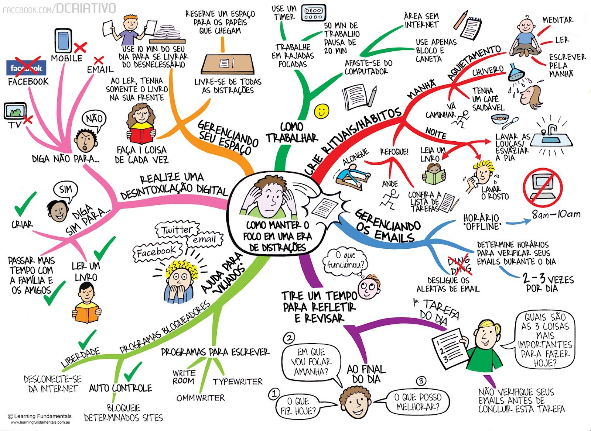
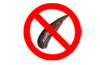

Terceira dose: FOCO!(){
Dicas
Por: Fellipe Augusto Alves Gurgel
Foco, por Mecânica UFRGS
Numa era de distrações, tecnologias e vícios, fica extremamente difícil desenvolver seu conhecimento e inteligência se não houver um dos fatores mais importantes desses processos: o FOCO.
Se você parar pra pensar "agora que conheço meus pontos fracos e fortes, para desenvolvê-los de maneira eficiente, precisarei de determinação e disciplina". Certo! Mas se essas não vierem acompanhadas de muito FOCO, você acaba perdendo a eficiência.
O foco se define como o ato ou efeito de se concentrar e se manter nesse estado. Muitos vão concordar comigo, pois é muito difícil se manter longe das distrações, dos vícios tecnológicos principalmente, como redes sociais, blogs, vídeos, até notícias...
A imagem a seguir ilustra bem a era em que vivemos hoje e como é difícil manter o foco diante de tanta distração! E #FicaDica também. Entendo o quanto é difícil seguir a risca, tudo que prescreve essa imagem, mas é uma excelente dica pra quem não sabe como começar!

Como manter o foco numa era de distrações. Se não estiver conseguindo enxergar perfeitamente acesse o link e clique na imagem para ampliá-la.
Existem aqueles que não têm escolha, o computador ou outra tecnologia é essencial. Então, existem aplicativos que também podem nos ajudar.
Se o problema são alguns sites:

LeechBlock
(download)
O LeechBlock é uma extensão para o Mozilla Firefox, que bloqueia os sites que você definir.
StayFocusd
(download)
Já StayFocusd é uma extensão para o Google Chrome com a mesma finalidade, só que mais rígido. Porém outro navegador anula o efeito.
Could Turkey
(download)
Esse é um aplicativo é instalado no computador e de forma fácil, intuitiva e divertida, bloqueia os sites que você desejar. Este atua em todos os navegadores e mesmo se você reiniciar o computador, as regras continuam valendo. Por uma determinada contribuição ($4,99), você o atualiza para versão "pró", que bloqueia também o acesso a alguns softwares, para aqueles viciados em jogos, é uma boa!
Bom, como a produtividade é um dos principais benefícios e resultados do uso dessas dicas, sugiro que você procure mais sobre o assunto! Nos sites que citarei nas referências desta página você encontra várias outras dicas de assuntos diversos.
"Fellipe, mas por que você está me dizendo onde procurar ao invés de já me passar essas tais dicas? Não é esse o objetivo dessa seção?" - você me perguntaria. E eu lhes responderia "Senhoras e senhores, a pesquisa é tão importante quanto a informação! Minha intensão não é 'mastigar' as dicas, mas sim despertar a sua curiosidade para buscar mais sobre o tema..."
Referências:
}